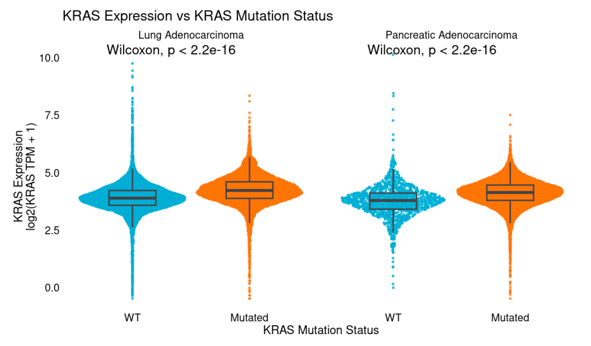
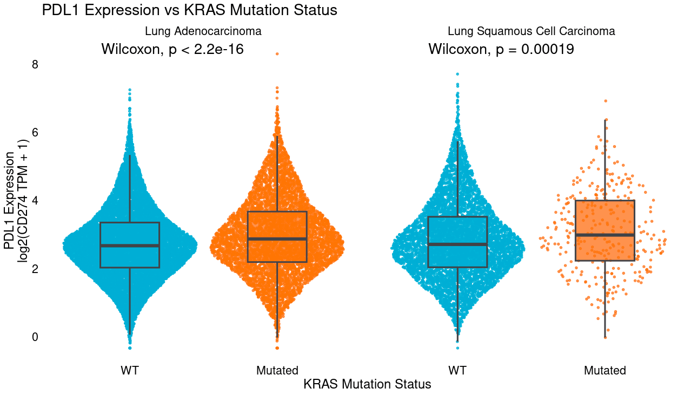
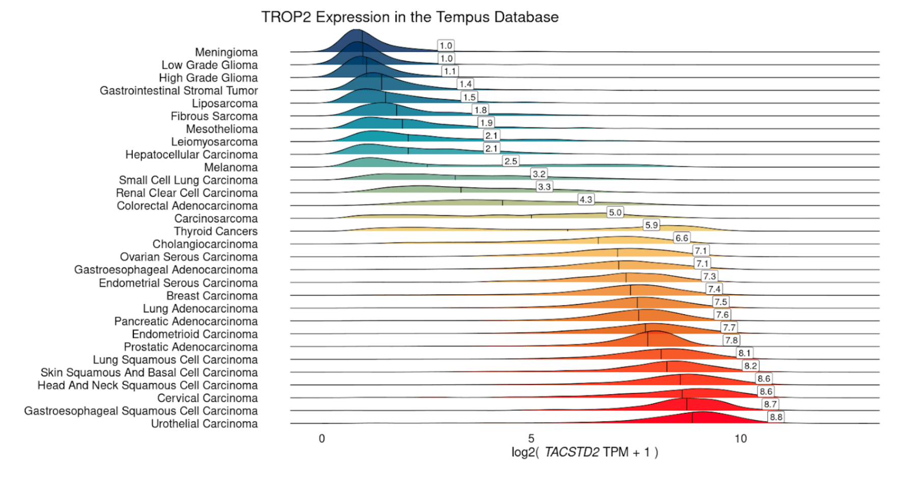
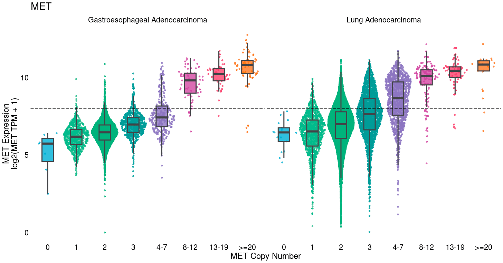
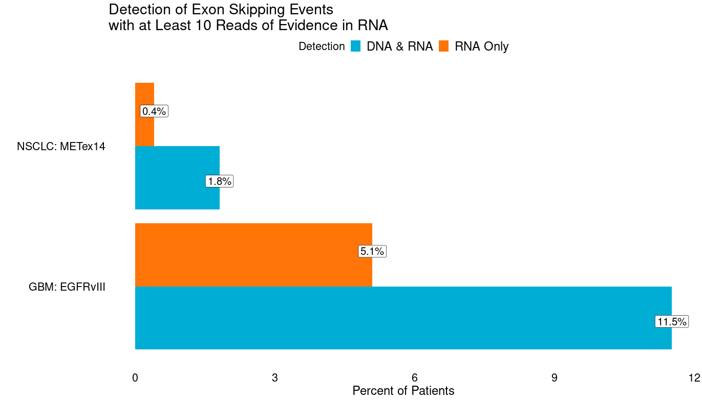
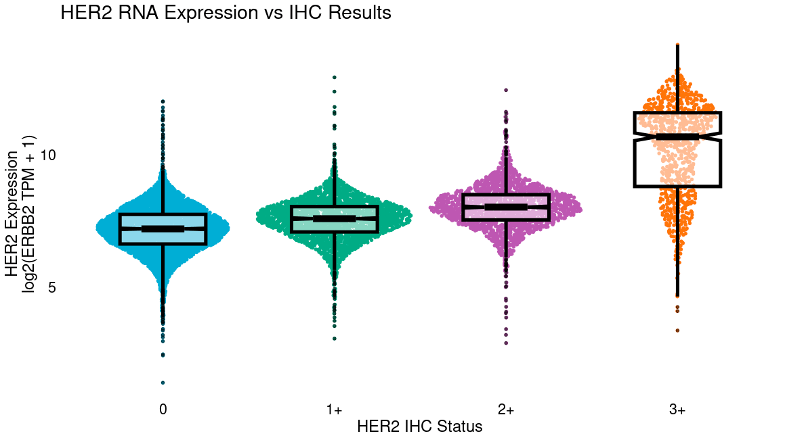
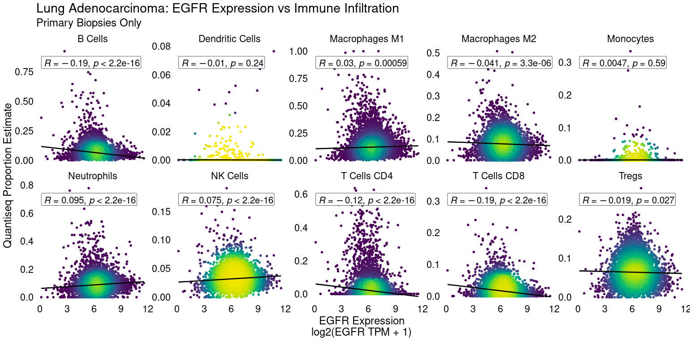

-
PROVIDERS
Register now
Are you getting the full picture? A webinar series on the power of comprehensive intelligent diagnostics
-
LIFE SCIENCES
Register now
AI & ML in action: Innovations in clinical trial enrollmentThursday, April 10, 202512 PM PT / 2 PM CT / 3 PM ET
-
PATIENTS
It's About Time
View the Tempus vision.
- RESOURCES
-
ABOUT US
View Job Postings
We’re looking for people who can change the world.
- INVESTORS
08/10/2023
The value of RNA sequencing in drug discovery
Learn the value of RNA Sequencing in identifying altered expression programs in tumors that are measurable by RNA-Seq but not DNA-Seq.
Authors
Joshua SK Bell
Sr Director of Enterprise Strategy, Tempus
Sr Director of Enterprise Strategy, Tempus
RNA sequencing (RNA-Seq) is critical to developing the next generation of cancer therapies. Today, RNA-Seq’s primary clinical use in oncology is for fusion detection, where it can offer enhanced sensitivity compared to DNA sequencing (DNA-Seq) alone. Yet, tumor gene expression is rich in biological information, including cellular composition, the tumor cell type of origin, the immune microenvironment, drug target overexpression, oncogenic pathway signaling, and prognostic/predictive cell states such as homologous recombination deficiency. Because of this richness, it is vital to understand, leverage, and validate RNA at every stage of drug development, including target discovery and selection, molecular characterization across the patient journey, mechanistic studies, predicting and characterizing drug sensitization and resistance, clinical trial design, combined and multimodal therapeutic opportunities, trial recruitment, indication expansion, real-world market analytics, resistance and back-translation, tumor microenvironment characterization, and CDx development.
Target discovery and selection
While much of the focus within target discovery has been on DNA mutations, amplifications, and fusions, aberrant overexpression and epigenetic regulation have also proven fruitful to target. These include genes responsible for driving tumor growth (e.g., ER) and evading the immune system (e.g., PD1) as well as tumor-associated antigens (TAAs, e.g., TROP2 Trodelvy, Nectin-4 Padcev) that are specifically expressed in tumors compared to healthy tissue. Novel biologic and immune therapies targeting TAAs include antibody-drug conjugates, bispecific antibodies, and vaccines. These therapies rely on targets that are overexpressed in tumors, often measurable by RNA-Seq but not DNA-Seq. Many genes that are canonically genetically altered often show substantial overexpression (e.g., HER2, MET, KRAS, EGFR) among wildtype, non-amplified tumors, highlighting a possible additional patient population. Even among mutant tumors, a range of expression is often observed which may modulate response. For example, KRAS mutant tumors generally display higher KRAS expression than WT tumors, suggesting epigenetic selection for upregulation of mutant alleles.

Molecular characterization across the patient journey
Public initiatives like TCGA have made incredible progress characterizing early-stage tumors. However, gene expression is dynamic and evolves as the tumor progresses, metastasizes, is exposed to therapy, and develops resistance. Fewer resources are available to capture the prevalence or degree of overexpression seen in later-stage tumors. Retrospective analysis of data from late-stage disease, as is captured in the de-identified Tempus Multimodal Database, can:
- Identify highly and specifically expressed tumor-associated antigens
- Characterize their prevalence and degree of overexpression among cancer (sub)types, post-treatment settings, mutational backgrounds, and metastatic sites
- Expand biomarker criteria in clinical trials for genes typically thought of as mutated or amplified to include over-expression and broaden patient populations
Mechanistic studies
RNA-Seq can be a valuable tool in understanding the pharmacokinetics and pharmacodynamics of novel therapies. For example, the expression profile of blood cells can indicate systemic drug-induced changes in constitutive processes aberrantly activated and targeted in tumors, like RAS signaling, glycolysis, Hippo, etc and can thus be used as a surrogate of target engagement. Additionally, expression in tumor cells of multidrug resistance transporters like ABCB1, or of enzymes necessary to unmask cytotoxic payloads, may modulate drug localization, stability, and efficacy. Furthermore by identifying the transcriptional changes induced by therapy, either in patient tumors or in preclinical models, we can hone in on the mechanism of drug activity.
Predicting and characterizing drug sensitization and resistance
Transcriptional changes can reveal biomarkers of drug response. RNA-Seq of clinical trial patients, or real-world evidence from those receiving marketed drugs, can be used to identify predictive expression profiles. Comparison of post-treatment, relapsed or refractory, samples can identify gene expression induced or inhibited by a compound, or selected for as a mechanism of resistance. Experiments in patient-derived organoids can be used to refine these expression profiles, isolating targets of drug resistance, and differentiating candidate biomarkers of response and pharmacodynamics, including:
- Drug perturbations revealing induced changes and the transcriptional state of resistant clones
- Bespoke genetic manipulation (e.g., CRISPR screens), single cell RNA-Seq, and other specialized assays
Clinical trial design
Linking target overexpression to outcomes can identify areas of unmet need – settings in which patients with a biomarker do poorly on standard of care and are likely to benefit from investigational therapy. When stratifying by a biomarker, it’s important to consider how these patients differ from others: prognostically, or predictively vs. possible comparator arms.
- Prognostically for example, patients with highly immune-infiltrated tumors may tend to do better regardless of therapy. That means a cohort selected for high infiltration (directly or through a correlated biomarker like PDL1 IHC+) will likely perform better than other patients on both the investigational and comparator arms of a study. Patients may still benefit more from the novel therapy, but endpoints may take longer than expected to reach if projections are based on the broader population.
- Similarly, a biomarker may not be broadly prognostic, but predictive of response to only certain therapies. A novel therapy enrolling on such a biomarker may be more likely to succeed and benefit patients in settings where the biomarker is not positively predictive, or is negatively predictive for the comparator arm.
By performing full genomic and transcriptomic characterization of patients entering clinical trials, one can retrospectively test prognostic and predictive biomarkers that can be used to refine biomarker strategies for later-stage trial design to enhance the probability of success.
Combined and multimodal therapeutics opportunities
Combination therapy development
Ideal combination therapy settings can be identified in several ways. In the simplest example, co-occurence of biomarkers for each therapy e.g. where overexpression of an antibody target gene like PDL1 (CD274) tends to co-occur with another actionable target like KRAS mutation.

Settings can then be prioritized by determining those where target overexpression is more frequent among post-treatment samples that are resistant, which may occur where overexpression is a secondary resistance mechanism or where resistant clones tend to also harbor overexpression of the target. Further, therapies where high target expression is also linked to worse outcomes among pretreatment biopsies (potentially as primary resistance) may be particularly attractive as patients with high target expression display unmet need and opportunity to benefit vs a comparator arm.
Beyond target expression, these analyses can extend to transcriptional signatures of response, such as a model trained to distinguish responders from non-responders to platinum-based chemotherapy.
Antibody-Drug Conjugates (ADCs)
ADCs are a promising class of molecules that target cytotoxic payloads to tumors by conjugating them to antibodies that recognize tumor-associated antigens, reducing off-target toxicity and increasing the total amount of drug that can be delivered to each tumor cell. Antigen expression (potentially even at modest levels) is often necessary for ADC response and is readily measured by RNA-Seq. Transcriptome or multimodal signatures may also be valuable in predicting response to the cytotoxic payload, such as genes tied to response to topoisomerase inhibitors, enzymes required to cleave linkers, or multidrug resistance transporters. Such signatures can potentially be trained from tumor samples that received similar drugs as chemotherapy where sufficient transcriptional data tied to outcomes is available from organoid experiments, clinical trial samples, or real-world evidence after approval.
Bispecific antibodies and cell engagers
Bi-specific antibodies and T-cell engagers enhance selective targeting of tumors by requiring the presence of two antigens, often a tumor-associated antigen and CD3, activating T-cells in direct contact with tumors. Cancer types with high expression on average of both targets, as well as indications where expression is correlated at a patient level (i.e., patients with high levels of one target tend to have higher levels of the other) may be most likely to respond. Where one antibody is a T-cell engager or has other immune activity, immune microenvironment characterization from RNA-Seq may also be valuable, identifying Tregs or cytotoxic T-cell infiltration, for example.
Trial recruitment
Positivity by immunohistochemical (IHC) testing is a common enrollment criteria for clinical trials, often for biomarkers that are not common in a population. Broad clinical RNA-Seq screens patients for overexpression of all genes and can be used to predict the levels of many proteins. Therefore we can use RNA-Seq as a surrogate or screening tool to identify patients likely to be IHC+ for multiple tests. This data can help focus IHC testing and trial enrollment efforts on patients who will likely be eligible – potentially decreasing trial times and cost. By harnessing the parallel capabilities of RNA-Seq to detect fusions and the potential to detect other variant types, trial recruitment could progress more quickly. More patients could be efficiently identified by RNA-Seq combined with DNA-Seq than with DNA-Seq alone or with a multitude of targeted protein tests. Indeed, broad RNA-Seq platforms can be validated to encompass many biomarkers under one test, similar to DNA-based NGS CDx platforms.
Indication Expansion
Over-expression of tumor-associated antigens
Many therapies targeting overexpressed genes have only been tested in a few indications. For example, sacituzumab govitecan-hziy, an antibody-drug conjugate targeting TROP2 (TACSTD2) is only approved in certain breast and urothelial cancers, even though TROP2 displays high expression in many common tumor types. Retrospective analysis of RNA-Seq data can identify label expansion opportunities, including cancer (sub)types as well as specific post-treatment settings or other clinically or molecularly defined populations. While several tumor types show consistently high expression of TROP2 (e.g. breast, urothelial, NSCLC), and may not require confirmation of high TROP2 expression, others like melanoma and colorectal adenocarcinoma display significant heterogeneity. In order to target such tumor types, RNA can be used to selectively identify patients with high expression, as a CDx directly or to screen patients for IHC.

Overexpression of canonically amplified genes
Many commonly mutated or amplified oncogenes also show substantial overexpression among diploid, wildtype tumors. Tumor cells take several paths to achieve high levels of oncogenic proteins, including DNA amplification, but also epigenetic over-expression. In breast cancer, for example, HER2 is commonly amplified, but ER & PR typically show high RNA and protein levels without gene amplification. Furthermore, reportable MET amplification (≥ 8 copies) captures only a fraction of patients with high MET expression and could potentially be the target of additional trials for MET inhibitors. Identification of clinical and molecular settings enriched for target expression levels can identify those best to target for additional trials, and characterize the number of additional patients that would be missed by use of amplification alone for enrollment.

Oncogenic pathway activity
Oncogenic signaling pathways can be disrupted at any level. For example, the MAPK pathway involves alterations in RAS, RAF, MEK, and ERK genes, but not all activation of the pathway may be captured by exon-targeted DNA-Seq alone. Epigenetic alterations, including DNA methylation & chromatin modifications, or mutations in regulatory regions like enhancers or insulators, may also cause MAPK activation and drug response but would not be identified by DNA-Seq. Transcriptional signatures can identify pathway activation regardless of cause by leveraging expression profiles induced downstream by pathway activation. At Tempus, we often train such signatures to distinguish tumors with pathogenic mutations in canonical genes in a pathway, as a gold standard of tumors with pathway activation, versus WT tumors, the majority of which will not display pathway activation. Such models could be developed as companion diagnostics (CDx) or used as research tools to identify enriched indications, post-treatment settings, or metastatic sites, or to characterize DNA variants of unknown significance (i.e. if most tumors with a VUS show high signature scores) for reporting from DNA-Seq.
Splicing alterations
Splicing alterations, i.e., changes in exon usage, can be key drivers of cancer. Some can be caused by genetic changes (e.g., EGFRvIII, METex14), but many are not (e.g., ARv7) and appear to be epigenetically mediated. Even for those that are typically genetic, more patients can be identified with RNA-Seq without clear genetic causes. Indeed in GBM we observe an additional 5.1% of patients with at least 10 reads of evidence in RNA of EGFRvIII (reads directly spanning exons 1 & 8), and an additional 0.4% of patients in NSCLC with METex14 (reads directly spanning exons 13 & 15) that lack DNA evidence (intragenic deletions in EGFR or mutations tied to METex14). Discovery of novel resistance mechanisms and driver splicing alterations may be enabled by broad clinical RNA-Seq. For example, altered splicing in BRAF has recently been implicated as a resistance mechanism.

Real-world market analysis
Clinical RNA-seq of a broad population paired with records of treatment, outcomes, uptake of IHC testing, and prescription rates can help identify overexpressing patients who could be eligible for therapies that require IHC positivity, if tested. This may help identify gaps in IHC ordering that could justify uptake or use of broad clinical RNA-Seq for screening.
Additionally, RNA-Seq of patients being prescribed a therapy with an IHC CDx may identify where staining thresholds could be relaxed. For example, a clinical trial of trastuzumab deruxtecan (Modi et al., “ Trastuzumab Deruxtecan in Previously Treated HER2-Low Advanced Breast Cancer”, NEJM, 2022) recently demonstrated that HER2-low patients respond to anti-HER2 therapy, which traditionally was only given to HER2-high patients. More recently, response was even shown among patients with minimal HER2 staining by IHC (HER2-0, Moselle et al., “Trastuzumab deruxtecan in metastatic breast cancer with variable HER2 expression: the phase 2 DAISY trial.” Nature Medicine, 2023.) Notably, this study did not assess RNA expression of HER2, but internal Tempus analysis shows significant RNA expression even in IHC-0 biopsies (below). If studies show that even patients with the lowest RNA expression eligible for therapy are benefiting, this may suggest trials with lower expression thresholds. RNA-seq may also be more technically reproducible, especially where offered centrally, as differences in IHC staining and interpretation can differ among institutions, particularly in low-positivity ranges.

Resistance and back translation
Sequencing of pre- and post-treatment clinical trial samples can be valuable in identifying drug response biomarkers. Among pre-treatment samples, one may identify genomic or transcriptomic signatures that predict response or primary resistance. Sequencing of post-treatment resistant tumors can identify resistance mechanisms selected for by therapy. This may inform patient stratification approaches in trials or inform combination therapy design to combat resistance, as well as inform target discovery of novel resistance alterations.
Tumor microenvironment characterization
RNA-Seq broadly captures the transcription of immune-lineage-specific and pathway-specific genes, allowing for robust cell type immune pathway activity estimation. Deconvolution algorithms can determine the enrichment of CD8+ T-cells or NK cells in a tumor sample, for example. Gene signatures can identify cytolytic activity from CD4+ and CD8+ T-cells, which may predict response to IO or interferon signaling, for example. Such data can be critical to identifying novel immune checkpoints to target or in stratifying patient tumors likely to respond to therapy. For example EGFR expression is negatively linked to CD8+ T-cell infiltration in lung adenocarcinoma.

CDx development
RNA-Seq offers enhanced fusion detection including specific exon-retention/exclusion and noncanonical fusion partners that may be missed by targeted DNA panels. Single gene overexpression and transcriptional signatures including pathway activation, subtyping (e.g. Consensus Molecular Subtypes [CMS] in colorectal cancer), or immune activity may also be used as CDx biomarkers in the future pending further development. Sequencing in clinical trials can be used to rapidly identify biomarkers of response which can be used in later trial phases or to identify biomarker-driven strategies where clinical trials in broad populations have failed to show a benefit over the standard of care, or to inform expansion to indications where biomarker levels are heterogeneous and require patient selection.
-
 03/11/2025
03/11/2025Case Report: Pharmacogenomic testing and mood stabilizers
This real-world case demonstrates how the Tempus nP pharmacogenomic test facilitated a personalized treatment approach for a patient with bipolar disorder.
Read more -
 03/05/2025
03/05/2025Evolving outcomes research: The convergence of data, technology, and collaboration
This white paper offers an in-depth examination of the evolving field of outcomes research, focusing on the integration of real-world data and advanced analytics to improve patient outcomes. In it, we discuss the current state of the industry, the challenges of data standardization and quality, and the collaborative efforts shaping the future. Download to explore innovative approaches that are transforming outcomes research and driving the development of patient-centric healthcare solutions.
Read more -
 02/24/2025
02/24/2025Advancing precision medicine in the community setting with TIME and Next at Cancer and Blood Specialty Clinic
Discover how Cancer and Blood Specialty Clinic, a community oncology network, utilized Tempus TIME to expedite clinical trial enrollment and is expanding their impact on patient care with Tempus Next, an AI-enabled care pathway platform.
Read more